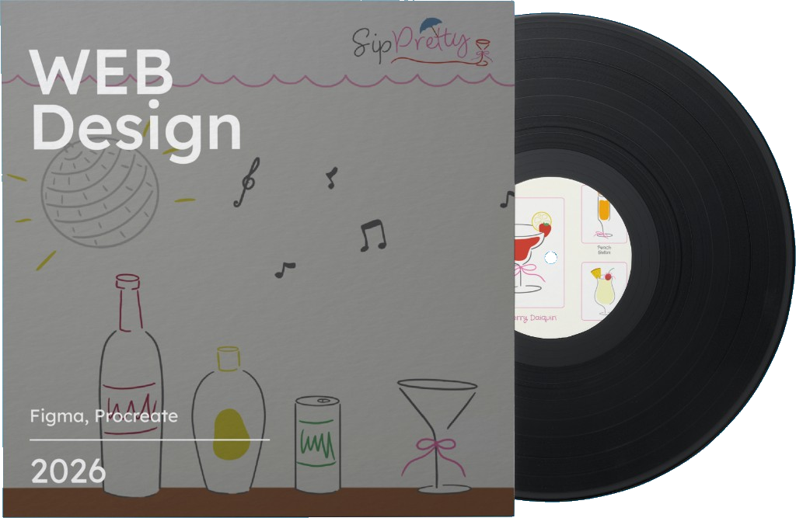
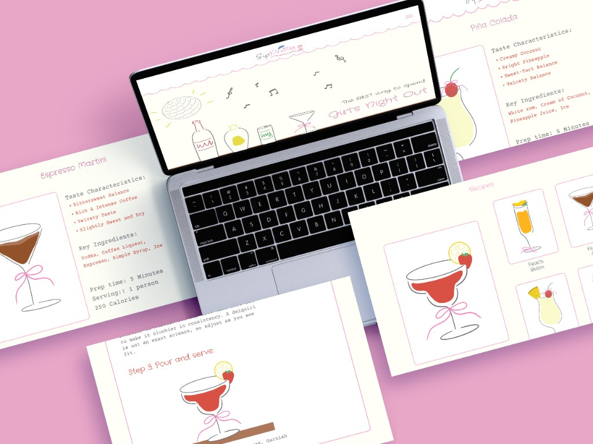
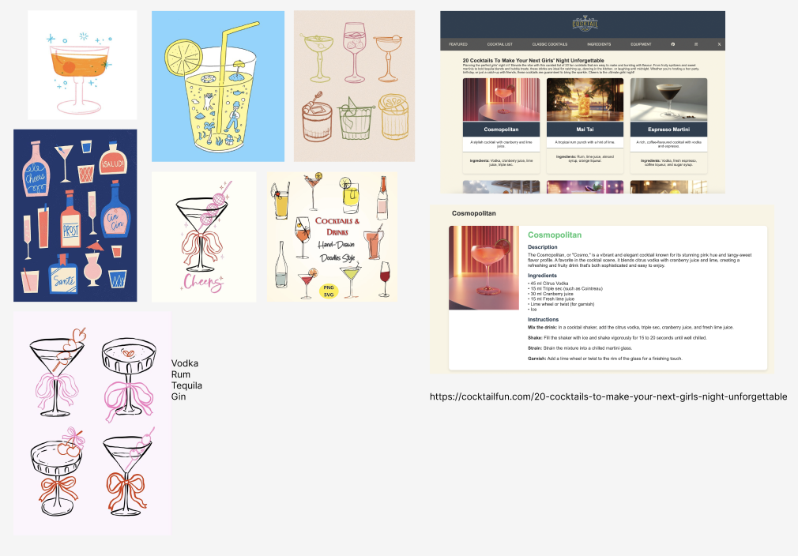

sip pretty
(2026)
web design | cocktail recipe website
tools: figma, procreate

Sip Pretty is a fun and stylish cocktail recipe website designed to help you recreate your favourite bar-worthy drinks right at home, whether you're drinking solo or trying to have a fun night with your girls. With a playful, illustrated aesthetic inspired by girl's night out vibes, the site makes learning to make cocktails feel less like following a recipe and more like a party.
OVERVIEW

Visually, the design balances playful charm with intuitive clarity. Hand-drawn cocktail illustrations, a warm cream palette, and soft pink accents give the site a distinctly feminine and celebratory energy, while clean layouts and structured recipe cards keep the content easy to navigate and follow along.
Each cocktail is differentiated through its own illustration and flavor identity, like bold and fruity for the Strawberry Daiquiri, rich and dark for the Espresso Martini, and bright and tropical for the Piña Colada. Allowing for a cohesive yet varied browsing experience across the full drinks menu.
The step-by-step method pages break each recipe down into approachable, illustrated stages, ensuring that even a first-time home bartender can follow along with confidence.
PROCESS

The process began with browsing cocktail and lifestyle websites, pulling inspiration from designs that felt fun, feminine, and approachable. A mood board built around the keyword "girls night out" shaped the visual direction early on. One reference in particular stood out: a warm, illustrated aesthetic featuring hand-drawn glassware and soft pink tones, which later became a key reference point and informed the decision to lean into a playful, sketch-like illustration style throughout the site.


Four flavor of protein bar illustration: Ube Vanila, Red Bean Black Sesame, Matcha White Chocolate and Brown Sugar Milk Tea
FINAL DELIVERABLE

KEY TAKEAWAYS
At its core, this project is defined by ethical complexity. The use of engineered human muscle cells as a food source challenges deeply ingrained cultural taboos and raises questions around consent, identity, and the boundaries of consumption. This makes the brand inherently controversial, forcing both designer and viewer to confront discomfort.
For me as a designer, this project required a deliberate separation between personal ethics and professional responsibility. While the premise may not align with one's own values, the role demands engaging critically and thoughtfully with the brief. Rather than avoiding the controversy, the design leans into it, using clarity, restraint, and credibility to present the product as plausible and real. This reflects a key challenge in design practice: the ability to navigate ethically ambiguous briefs while still producing rigorous, intentional work.
Ultimately, this project is not just about packaging a product, but about exploring how design can shape perception, normalize emerging technologies, and provoke dialogue around what we consider acceptable in the future of food.